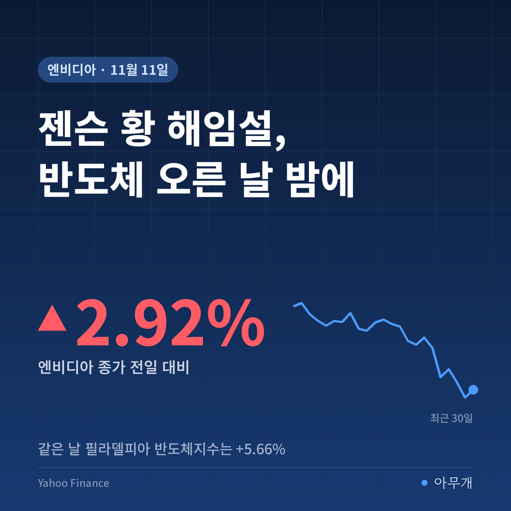
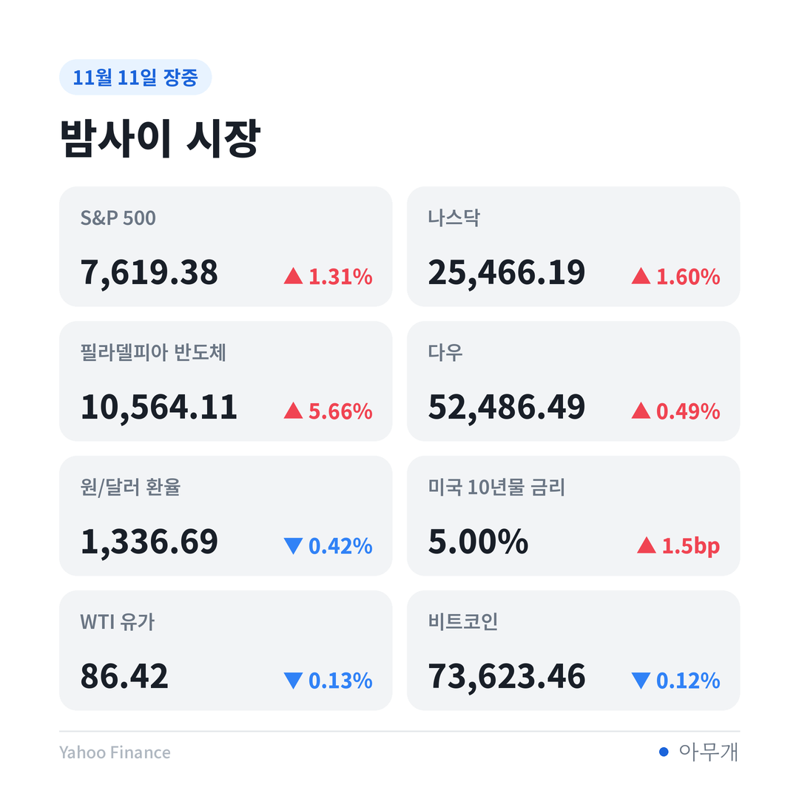
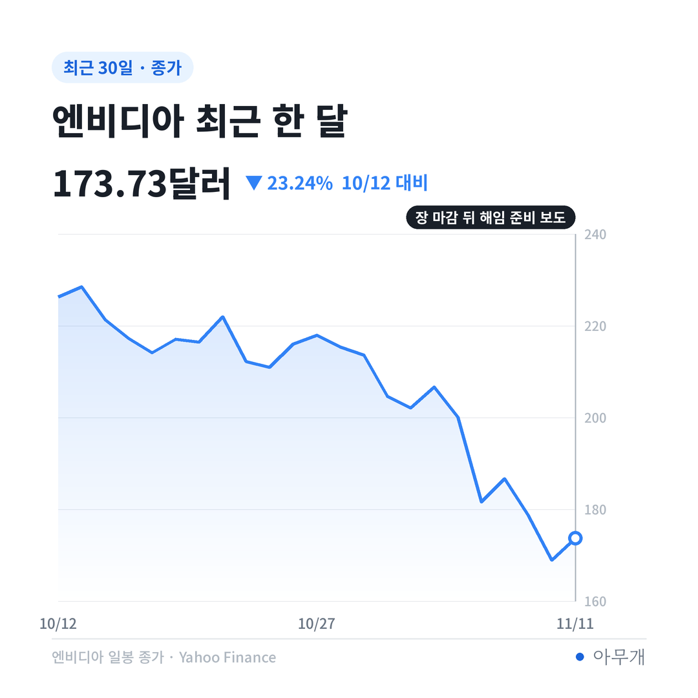
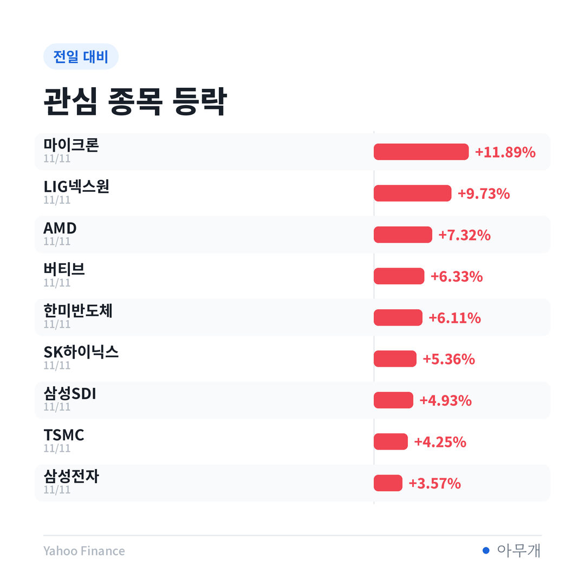

📷 사진 1 자리
사흘 만에 '조사'에서 '해임 준비'로
| 날짜(현지) | 내용 |
|---|---|
| 11월 8일(일) | 젠슨 황, 직원 메모로 혼외 관계 인정. 이사회는 독립 조사에 착수하며 신뢰를 표명[2] |
| 11월 10일(화) | 독립 사외이사들이 미국 로펌 왁텔 립턴에 조사를 맡김[2][3] |
| 11월 11일(수) 장 마감 뒤 | 뉴욕타임스(NYT), 사내 임원과의 두 번째 관계 보도. 몇 분 뒤 WSJ가 이사회의 해임 준비를 보도[3] |
| 같은 날 | 하원 3개 위원회가 정한 응답 시한. 11월 18일 증언을 요구했고, 답이 없으면 소환장도 검토[5] |
지난 10일 글에서는 조사 결과에 따라 유임, CEO 교체, 의혹 확인의 세 갈래를 그렸어요. 사흘 만에 저울이 'CEO 교체' 쪽으로 기울었어요. WSJ는 이사회가 이르면 11일 회의를 열어 거취를 정할 수 있다고 전했어요[1][2].
처음 보는 장면은 아니에요. 2018년 6월 인텔의 브라이언 크르자니치 CEO는 과거 직원과의 관계가 사내 규정 위반으로 확인되자 물러났고, 당시 최고재무책임자(CFO)가 임시 CEO를 맡았어요[8][9]. 상대가 회사 안 직원이었다는 점이 이번 NYT 보도와 겹쳐요. 엔비디아에서도 후임 후보로 콜레트 크레스 CFO 등이 거론되지만, 뚜렷한 후계자는 없다는 평가예요[4].
보도와 확인 사이
| 구분 | 내용 |
|---|---|
| ✅ 사실 | 젠슨 황 본인이 혼외 관계를 인정(11월 8일 메모)[2] |
| ✅ 사실 | 이사회 독립 조사 진행 중, 외부 로펌 선임[2][3] |
| ✅ 사실 | 하원 외교·중국특위·정보위원장이 11월 18일 증언 요구[5] |
| 📰 보도 | 이사회 해임 준비. WSJ가 소식통을 인용했고 이사회 발표는 없음[2] |
| 📰 보도 | 직속 보고 관계인 사내 임원과의 관계. NYT가 전·현직 직원 등 5명을 인용[2] |
| ⚠️ 의혹 | 첫 번째 상대 여성의 중국 정보기관 연계. 미 정보당국 판단을 전한 보도[3] |
| 🗣️ 회사 입장 | 8일 이사회는 국가안보나 기밀 침해를 믿을 이유가 없다고 밝힘. 11일 보도에는 즉답 없음[2] |
해임은 아직 결정이 아니라 보도 단계예요. 사생활보다는 이사회가 무엇을 근거로 움직이는지가 주가에 더 중요해요.
보도 전에도 반 박자 늦었다
11일 뉴욕 증시는 코어위브 실적에 힘입어 반도체가 크게 올랐어요[7].
📷 사진 2 자리
| 지표 | 11일 종가 | 전일 대비 |
|---|---|---|
| 필라델피아 반도체지수 | 10,564.11 | +5.66% |
| 마이크론 | 811.30달러 | +11.89% |
| AMD | 552.90달러 | +7.32% |
| TSMC(미국 상장) | 413.35달러 | +4.25% |
| 엔비디아 | 173.73달러 | +2.92% |
| 나스닥 | 25,466.19 | +1.60% |
엔비디아는 해임 보도가 나오기 전 정규장에서도 반도체지수 상승률의 절반 남짓만 따라갔어요. 업종 전체가 오를 때 혼자 덜 오르는 건 지난 9일 '엔비디아만 빠진 날'과 같은 모양이에요. 시장이 이미 CEO 문제를 엔비디아에만 따로 값을 매기고 있었다는 뜻이에요.
시간외 가격 159.59달러를 기준으로 보면 숫자가 더 무거워요. 메모 공개 전 마지막 거래일인 6일 종가 186.64달러보다 14.49% 낮아요[1]. 시간외 거래는 거래량이 적어 정규장에서 그대로 이어진다는 보장은 없어요. 그래도 정규장 기준으로도 1주 -13.19%, 1달 -23.24%예요.
📷 사진 3 자리
국내 반도체, 어제 숫자는 보도 전 숫자
국내 반도체주도 11일 함께 올랐어요.
| 종목 | 11일 종가 | 전일 대비 | 1주 |
|---|---|---|---|
| SK하이닉스 | 1,277,000원 | +5.36% | -8.52% |
| 한미반도체 | 184,000원 | +6.11% | -1.13% |
| 삼성전자 | 206,000원 | +3.57% | -5.50% |
| 코스피 | 5,375.36 | +2.60% | -5.43% |
뉴욕 정규장에서 SK하이닉스 미국주식예탁증서(ADR)는 9.71% 올랐어요[6]. 다만 이 숫자도 해임 보도 전에 찍힌 값이에요. 오늘 국내 장은 '코어위브 효과'와 '엔비디아 경영 공백 우려'를 한꺼번에 받아야 해요.
📷 사진 4 자리
엔비디아에 HBM(고대역폭 메모리)을 대는 SK하이닉스·삼성전자 입장에서 중요한 건 CEO가 누구냐보다 주문이 이어지느냐예요. 지난 9일에는 엔비디아가 빠질 때 국내 반도체가 반대로 움직였어요. 오늘도 그 구분이 유지되는지가 첫 번째 관전 포인트예요.
이사회 결정에 따라 갈리는 길
| 시나리오 | 무엇을 보면 되나 | 예상되는 영향 |
|---|---|---|
| 해임 또는 사임 발표 | 이사회 공식 발표, 임시 CEO 지명 | 불확실성 일부 해소. 다만 후계 구도가 없어 엔비디아 변동성은 이어질 수 있음[4] |
| 유임, 조사 계속 | 이사회가 WSJ 보도를 부인하는지 | 시간외 낙폭 일부 회복 시도. 18일 의회 증언 문제는 남음 |
| 결정 지연 + 의회 소환 | 하원 소환장, 수출 규제 법안 | 회사 문제가 대중국 칩 수출 규제 논의로 번질 수 있음[5]. 이때는 국내 반도체도 영향권 |
시장이 진짜로 걱정하는 건 불륜 자체보다 수출 규제 쪽이라고 봐요. 젠슨 황은 대중국 칩 수출 규제에 반대해 온 인물인데, 의회는 이번 일을 규제 강화 법안의 근거로 쓸 수 있어요[5]. 미국이 AI 칩 판매와 투자 속도를 스스로 늦추면 중국이 따라잡을 틈이 생긴다는 걱정이 커지는 지점이에요.
✍️ 직접 보거나 들은 경험이 있으면 위 문단에 한두 줄 덧붙이세요 (이 안내 줄은 지우기)
반대로 보면, CEO 교체가 오히려 리스크를 줄이는 길일 수 있어요. 의회가 문제 삼는 건 젠슨 황 개인의 취약성이고, 사람이 바뀌면 회사와 규제 논의를 분리하기 쉬워져요. 어제 코어위브 실적이 보여 줬듯, AI 칩 수요는 CEO 한 사람과 별개로 움직이고 있어요[7].
목요일 아침, 확인할 순서
참고한 기사
이 글은 정보 제공 목적이며 투자 권유가 아닙니다. 투자 판단과 책임은 본인에게 있습니다.
시장 수치: Yahoo Finance 종가 기준(시간외 가격은 연합뉴스 보도 기준)



